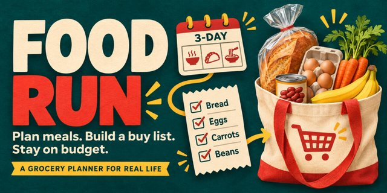

Food Run
Meal planning on a budget

Give it a spending limit, your kitchen equipment and how much cooking you'll do, and it suggests meals, snacks and drinks for the coming days with a shopping list and an estimated total.
Executive summary
Why it exists
I wanted a quick idea of what to buy at the grocery store: enough meals for the next few days without going over a set amount.
Outcome
Live on GitHub Pages. Starter prices are rough U.S. estimates as of November 2026, and you can enter your own store's prices. It is a budgeting toy, not nutritional or dietary advice.
My role
Author. Shared under the MIT license for anyone who wants to customize it or play with the idea.
Technical overview
How it works
A small browser app in plain JavaScript with no build step. On the Buy list tab you set the days to cover and a spending limit; each day gets breakfast, lunch, dinner, three snacks and a drink with each meal. Food settings cover equipment (refrigerator, freezer, microwave, hotplate, oven), pantry basics, taste and spice, preparation level from No prep to Skilled, and variety. Starter foods, prices and 184 meals, snacks and drinks are plain JSON that seed the browser, and everything you enter stays on your computer, with JSON backups and USB folder sync.
Hard parts
Fitting whole packages to a budget. Groceries come in whole packages, so variety costs money; the planner rounds up to whole packages, covers as many days as the limit allows, and only adds variety that fits without covering fewer days. A meal, snack or drink never repeats on the same day or on back-to-back days, except morning coffee and evening tea.